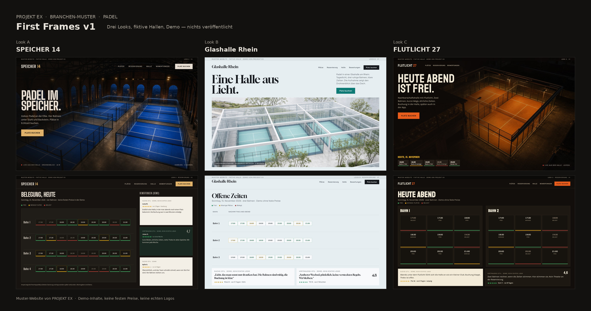

Look A — SPEICHER 14
Hamburg. Industrial, Backstein und Stahl, Dämmerung, vier blaue Bahnen.
HTML-Hero ADrei komplett verschiedene Looks für eine interaktive Padel-Muster-Website. Fiktive Hallen, Demo-Inhalte, keine festen Preise, keine echten Logos. Noch nichts ist auf der Agenturseite veröffentlicht. Bitte einen Look wählen.

Hamburg. Industrial, Backstein und Stahl, Dämmerung, vier blaue Bahnen.
HTML-Hero AKöln. Helle Architekturhalle am Fluss, typografisch, drei aquafarbene Bahnen.
HTML-Hero BLeipzig. Nachbarschaftsclub unter orangem Flutlicht, zwei Bahnen, Abendenergie.
HTML-Hero C